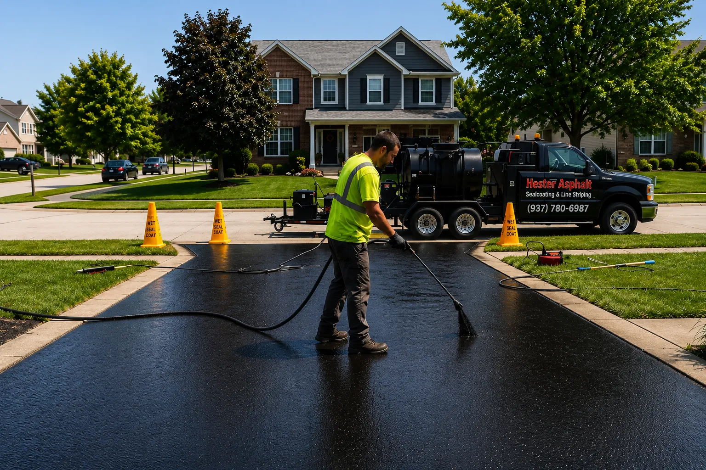
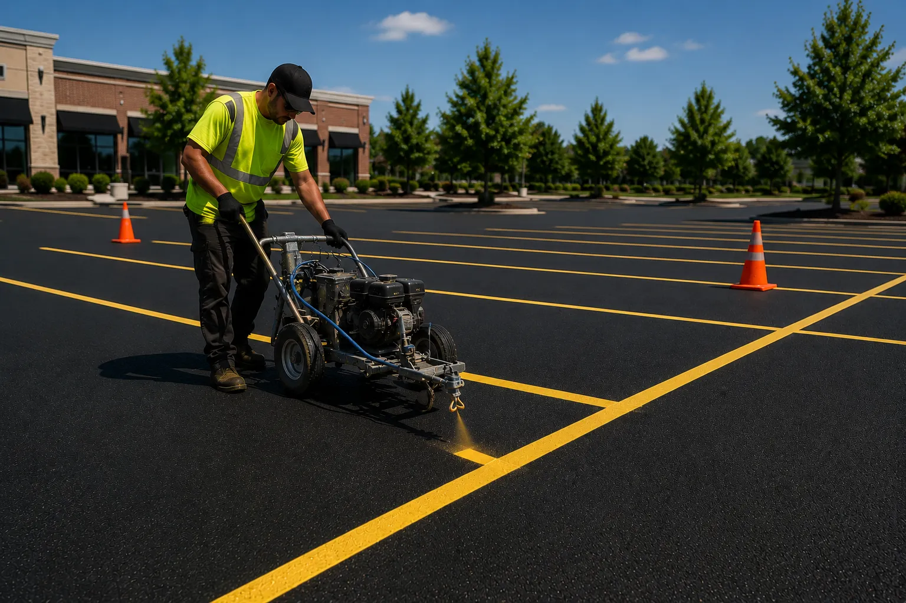

Sealcoating FAQ: Every Question We Get, Answered
Cure times, weather, preparation and early fading — the answers we give at the end of driveways, written down.
June 1, 2026 · 6 min readAsphalt Insights
Helpful articles on asphalt maintenance, sealcoating, repairs and the questions Southern Ohio property owners ask throughout the year.

Cure times, weather, preparation and early fading — the answers we give at the end of driveways, written down.
June 1, 2026 · 6 min read
A pothole is the last chapter of a long story. How they form, why cheap patches fail, and what a real repair looks like.
May 25, 2026 · 5 min read
Square footage is just the starting point. Learn what changes a parking lot paving price and what a cheap bid may leave out.
May 11, 2026 · 6 min read
Repeated freezing and thawing damage pavement all winter. The best protection starts in October.
April 27, 2026 · 5 min read
An overlay costs a fraction of replacement — when it's the right call. When it isn't, it's the most expensive shortcut in paving.
April 13, 2026 · 5 min read
Stall counts, van spaces, access aisles and signage — the accessibility fundamentals, in plain language.
March 30, 2026 · 5 min readEvery chronic pavement failure has a water story underneath it. How to read your lot's drainage before it reads your budget.
March 16, 2026 · 5 min readAn honest comparison of cost, climate, repairs and lifespan from people who only sell one of them.
March 2, 2026 · 6 min readThe first year affects the next twenty. A straightforward care guide for new asphalt.
February 16, 2026 · 4 min read
Everything a homeowner needs to do — and the short list of things to never do — to get 25 years from a driveway.
February 2, 2026 · 6 min readTen habits proven in the field that keep a commercial lot serviceable, compliant and out of the emergency budget.
January 19, 2026 · 6 min read
Pavement always announces its failures in advance. Here's the warning list, ranked by urgency.
January 5, 2026 · 5 min readClear stripes help organize traffic and protect pedestrians. Here is what each marking helps prevent.
December 8, 2025 · 5 min readTemperature, humidity and the calendar windows that produce a sealcoat job that lasts — versus one that flakes.
November 24, 2025 · 4 min read
How a few hundred dollars of hot rubber prevents a five-figure base repair — the chain reaction explained.
November 10, 2025 · 5 min readA practical guide to keeping a commercial lot serviceable, compliant and out of the capital budget.
October 27, 2025 · 7 min readThe 12 to 24 month guideline, the street test and the times when restriping is required by law.
October 13, 2025 · 4 min readA straightforward comparison that can save you tens of thousands of dollars when the pavement is judged honestly.
September 29, 2025 · 6 min readThe honest lifespan numbers — and the three habits that decide which end of the range your driveway lands on.
September 15, 2025 · 5 min readFree Estimates
Whatever the articles raised about your own asphalt, a free estimate answers it with real numbers.